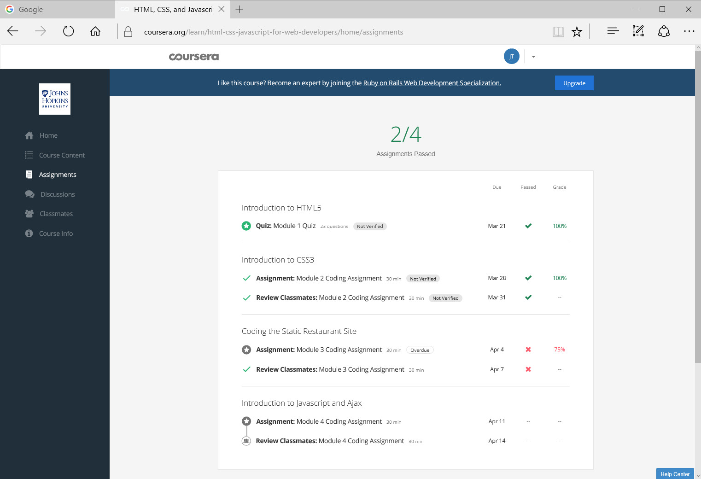
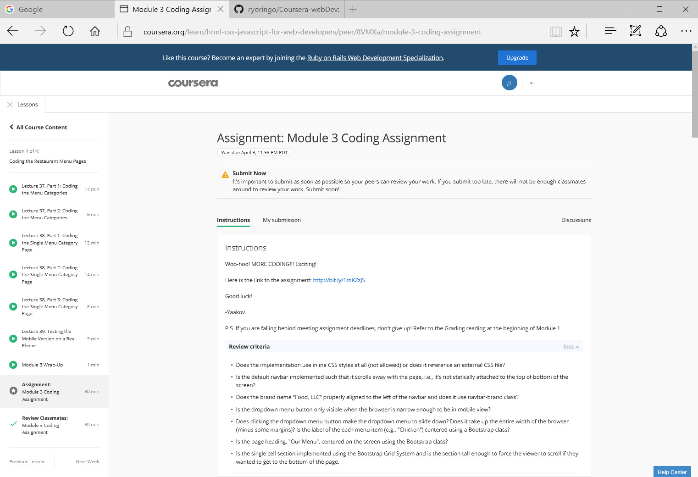
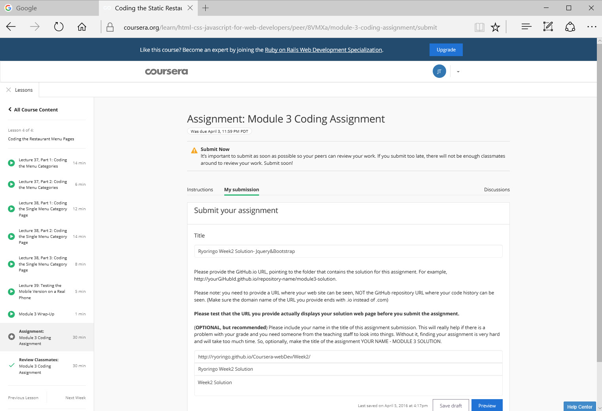

Screenshot1
It shows I failed in this assignment.
Screenshot2 & 3
When I clicked into the link, here is the assignment submission page.
There is NO grading history showing on the page. It looks as if I hadn't submit anything.

Q:How can I see the reviews of my graders after failing to pass?